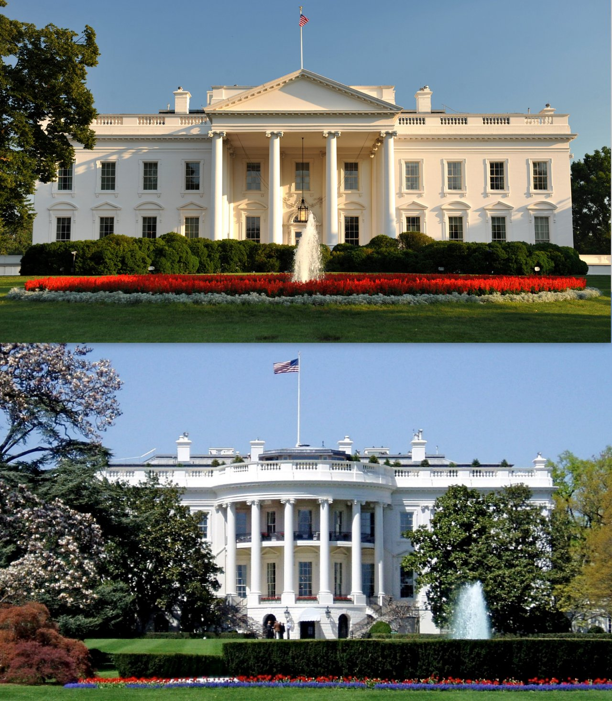
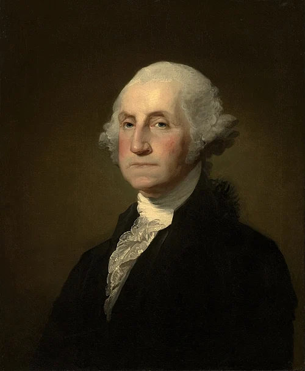
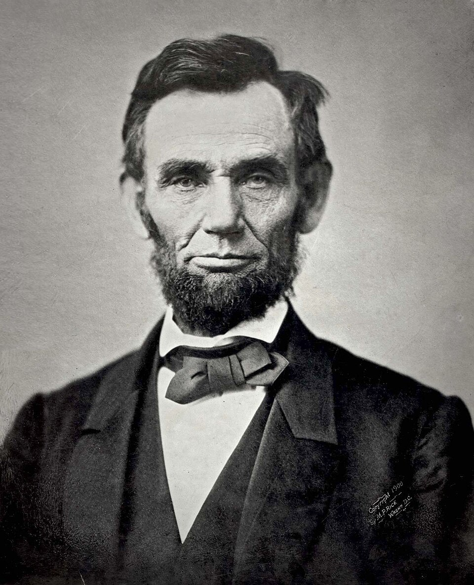
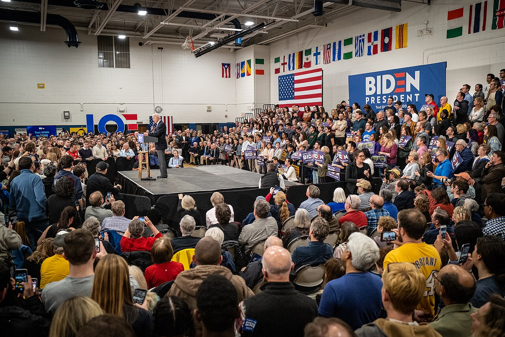
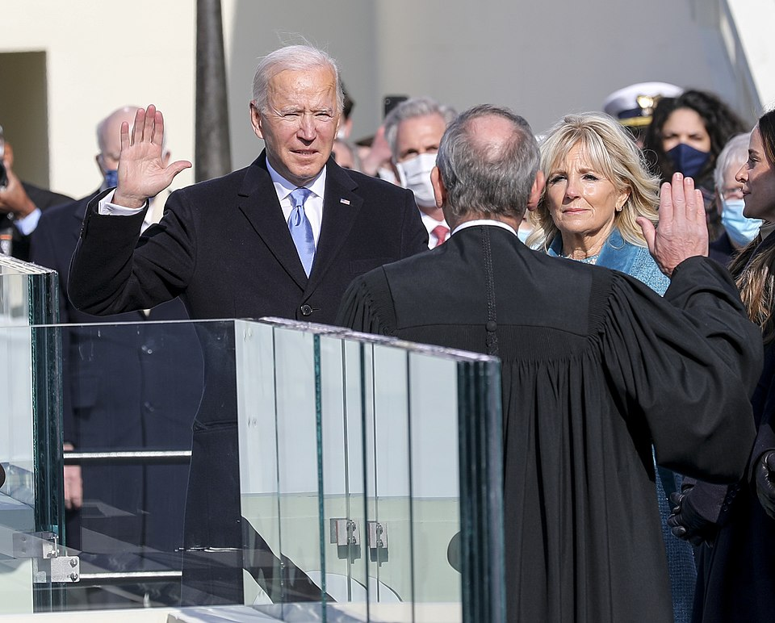
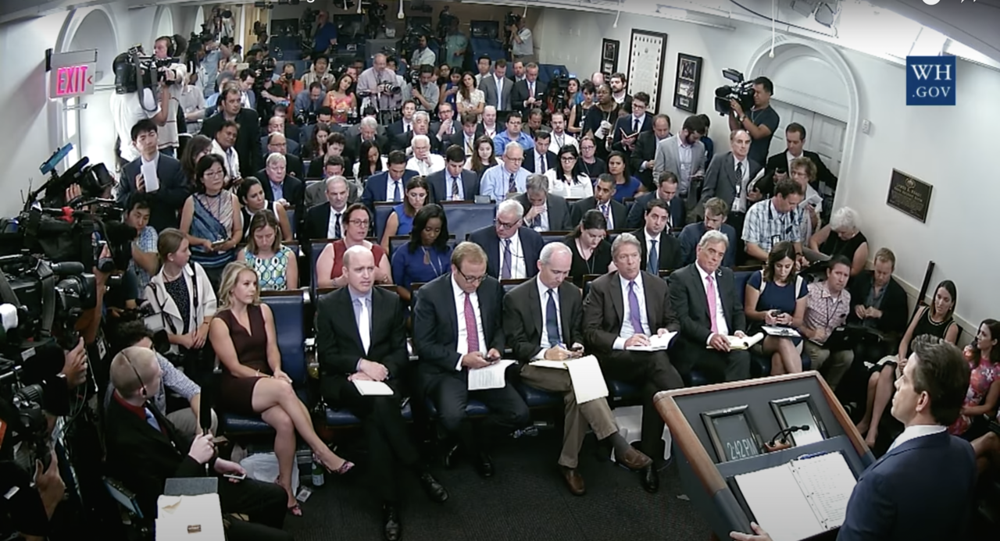

Explore the most visible position in the U.S. government. Learn how the presidency was designed, how presidents are elected, and how they exercise power through persuasion, direct action, and public appeal.
How the framers created the executive branch and how it has grown over time
From primaries and caucuses to the Electoral College
Transition, appointments, and setting the presidential agenda
How presidents communicate with and persuade the public
Executive orders, war powers, and unilateral authority
View your progress and achievements
Understanding how the executive branch was created and grew over time
The presidency is the most visible position in the U.S. government. During the Constitutional Convention of 1787, delegates accepted the need to empower a relatively strong and vigorous chief executive. But they also wanted this chief executive to be bound by checks from the other branches of the federal government as well as by the Constitution itself.

Over time, the power of the presidency has grown in response to circumstances and challenges. However, to this day, a president must still work with the other branches to be most effective. Unilateral actions, in which the president acts alone on important and consequential matters, such as President Barack Obama's strategy on the Iran nuclear deal, are bound to be controversial and suggest potentially serious problems within the federal government.
Effective presidents, especially in peacetime, are those who work with the other branches through persuasion and compromise to achieve policy objectives.
+15 points! Key Questions About the Presidency:
Since its invention at the Constitutional Convention of 1787, the presidential office has gradually become more powerful, giving its occupants a far-greater chance to exercise leadership at home and abroad. The role of the chief executive has changed over time, as various presidents have confronted challenges in domestic and foreign policy in times of war as well as peace, and as the power of the federal government has grown.
The Articles of Confederation made no provision for an executive branch, although they did use the term "president" to designate the presiding officer of the Confederation Congress, who also handled other administrative duties.
The presidency was proposed early in the Constitutional Convention in Philadelphia by Virginia's Edmund Randolph, as part of James Madison's proposal for a federal government, which became known as the Virginia Plan. Madison offered a rather sketchy outline of the executive branch, leaving open whether what he termed the "national executive" would be an individual or a set of people. He proposed that Congress select the executive, whose powers and authority, and even length of term of service, were left largely undefined.
+15 points! Competing Plans for the Executive Branch:
Virginia Plan (Madison): A single executive chosen by Congress for a seven-year term, empowered to veto legislation, subject to impeachment.
New Jersey Plan (Paterson): An executive committee elected by a unicameral Congress for a single term, which could be removed by a majority of state governors—a particularly weak executive.
Hamilton's Plan: A single individual chosen by electors, serving for life, with broad powers including the ability to veto legislation, negotiate treaties, grant pardons, and serve as commander-in-chief.
Debate and discussion continued throughout the summer. Delegates eventually settled upon a single executive, but they remained at a loss for how to select that person. Pennsylvania's James Wilson, who had triumphed on the issue of a single executive, at first proposed the direct election of the president. When delegates rejected that idea, he responded with the suggestion that electors, chosen throughout the nation, should select the executive.
Over time, Wilson's idea gained ground with delegates who were uneasy at the idea of an election by the legislature, which presented the opportunity for intrigue and corruption. The idea of a shorter term of service combined with eligibility for reelection also became more attractive to delegates. The framers of the Constitution struggled to find the proper balance between giving the president the power to perform the job on one hand and opening the way for a president to abuse power and act like a monarch on the other.
By early September, the Electoral College had emerged as the way to select a president for four years who was eligible for reelection. Today, the Electoral College consists of a body of 538 people called electors, each representing one of the fifty states or the District of Columbia, who formally cast votes for the election of the president and vice president.
In forty-eight states and the District of Columbia, the candidate who wins the popular vote in November receives all the state's electoral votes. In two states, Nebraska and Maine, the electoral votes are divided: The candidate who wins the popular vote in the state gets two electoral votes, but the winner of each congressional district also receives an electoral vote.
In the original design implemented for the first four presidential elections (1788–89, 1792, 1796, and 1800), the electors cast two ballots (but only one could go to a candidate from the elector's state), and the person who received a majority won the election. The second-place finisher became vice president. Should no candidate receive a majority of the votes cast, the House of Representatives would select the president, with each state casting a single vote, while the Senate chose the vice president.
While George Washington was elected president twice with this approach, the design resulted in controversy in both the 1796 and 1800 elections. In 1796, John Adams won the presidency, while his opponent and political rival Thomas Jefferson was elected vice president. In 1800, Thomas Jefferson and his running mate Aaron Burr finished tied in the Electoral College. Jefferson was elected president in the House of Representatives on the thirty-sixth ballot.
These controversies led to the proposal and ratification of the Twelfth Amendment, which couples a particular presidential candidate with that candidate's running mate in a unified ticket.
+15 points! The 2000 Election Almost Got More Complicated!
The Twelfth Amendment states that electors' two votes cannot both be for "an inhabitant of the same state with themselves." In the 2000 election, both George W. Bush and Dick Cheney were living in Texas. Bush and Cheney won with just 271 electoral votes—barely over the 270 required.
If both had been Texas residents, Texas's 32 electoral votes could have gone to only one of them! Cheney anticipated this problem and registered to vote in Wyoming, where he had served as a representative years earlier, avoiding a potential constitutional crisis.
Despite provisions for the election of a vice president (to serve in case of the president's death, resignation, or removal through the impeachment process), and apart from the suggestion that the vice president should be responsible for presiding over the Senate, the framers left the vice president's role undeveloped.
As a result, the influence of the vice presidency has varied dramatically, depending on how much of a role the vice president is given by the president. Some vice presidents, such as Dan Quayle under President George H. W. Bush, serve a mostly ceremonial function, while others, like Dick Cheney under President George W. Bush, become a partner in governance and rival the White House chief of staff in terms of influence.
Article II of the Constitution lays out the agreed-upon requirements—the chief executive must be at least thirty-five years old and a "natural born" citizen of the United States (or a citizen at the time of the Constitution's adoption) who has been an inhabitant of the United States for at least fourteen years.
While Article II also states that the term of office is four years and does not expressly limit the number of times a person might be elected president, after Franklin D. Roosevelt was elected four times (from 1932 to 1944), the Twenty-Second Amendment was proposed and ratified, limiting the presidency to two four-year terms.
+15 points! Four Presidents Have Faced Impeachment:
No president has ever been both impeached by the House AND removed by the Senate.
The Constitution that emerged from the deliberations in Philadelphia treated the powers of the presidency in concise fashion. The president was to be:
No sooner had the presidency been established than the occupants of the office, starting with George Washington, began acting in ways that expanded both its formal and informal powers. For example, Washington established a cabinet or group of advisors to help him administer his duties, consisting of the most senior appointed officers of the executive branch. Today, the heads of the fifteen executive departments serve as the president's advisers.

And, in 1793, when it became important for the United States to take a stand in the evolving European conflicts between France and other European powers, especially Great Britain, Washington issued a neutrality proclamation that extended his rights as diplomat-in-chief far more broadly than had at first been conceived.
+15 points! Presidential Power Expansion by Early Presidents:
Of the many ways in which the chief executive's power grew over the first several decades, the most significant was the expansion of presidential war powers. While Washington, Adams, and Jefferson led the way in waging undeclared wars, it was President James K. Polk who truly set the stage for the broad growth of this authority.
In 1846, as the United States and Mexico were bickering over the messy issue of where Texas's southern border lay, Polk purposely raised anxieties through his envoy in Mexico. He then responded by sending U.S. troops to the Rio Grande, the border Texan expansionists claimed for Texas. Mexico sent troops in response, and the Mexican-American War began soon afterward.
Abraham Lincoln, a member of Congress at the time, was critical of Polk's actions. Later, however, as president himself, Lincoln used presidential war powers and the concepts of military necessity and national security to undermine the Confederate effort. In suspending the privilege of the writ of habeas corpus, Lincoln blurred the boundaries between acceptable dissent and unacceptable disloyalty. He also famously used a unilateral proclamation to issue the Emancipation Proclamation.

Developing a budget in the nineteenth century was chaotic. Federal agencies independently submitted budget requests to Congress. Following World War I, when federal spending and debt skyrocketed, reformers proposed putting the executive branch in charge of developing a budget.
The Budget and Accounting Act of 1921, signed by President Warren Harding, gave the president first-mover advantage in the budget process via the first "executive budget." It also created the Bureau of the Budget (later renamed the Office of Management and Budget). With this act, Congress willingly delegated significant authority to the executive and made the president the chief budget agenda setter.
Over the course of the twentieth century, presidents expanded and elaborated upon these powers. The rather vague wording in Article II, which says that the "executive power shall be vested" in the president, has been subject to broad and sweeping interpretation in order to justify actions beyond those specifically enumerated in the document.
As the federal bureaucracy expanded, so too did the president's power to grow agencies like the Secret Service and the Federal Bureau of Investigation. Presidents also further developed the concept of executive privilege, the right to withhold information from Congress, the judiciary, or the public. This right, not enumerated in the Constitution, was first asserted by George Washington to curtail inquiry into the actions of the executive branch.
The growth of presidential power is also attributable to the growth of the United States and the power of the national government. Whereas most important decisions were once made at the state and local levels, the increasing complexity and size of the domestic economy have led people in the United States to look to the federal government more often for solutions.
At the same time, the rising profile of the United States on the international stage has meant that the president is a far more important figure as leader of the nation, as diplomat-in-chief, and as commander-in-chief. Finally, with the rise of electronic mass media, a president who once depended on newspapers and official documents to distribute information can now bring that message directly to the people via radio, television, and social media.
Major events and crises, such as the Great Depression, two world wars, the Cold War, and the war on terrorism, have further contributed to presidential stature.
From primaries to the Electoral College
The process of electing a president every four years has evolved over time. This evolution has resulted from attempts to correct the cumbersome procedures first offered by the framers of the Constitution and as a result of political parties' rising power to act as gatekeepers to the presidency.
Over the last several decades, the manner by which parties have chosen candidates has trended away from congressional caucuses and conventions and towards a drawn-out series of state contests, called primaries and caucuses, which begin in the winter prior to the November general election.

The framers of the Constitution made no provision in the document for the establishment of political parties. Indeed, parties were not necessary to select the first president, since George Washington ran unopposed.
Following the first election of Washington, the political party system gained steam and power in the electoral process, creating separate nomination and general election stages. Early on, the power to nominate presidents for office bubbled up from the party operatives in the various state legislatures and toward what was known as the king caucus or congressional caucus.
+15 points! The Critical Election of 1824:
By the presidential election of 1824, many states were using popular elections to choose their electors. This became important when Andrew Jackson won the popular vote AND the largest number of electors, but the presidency was given to John Quincy Adams instead (by the House of Representatives).
Out of the frustration of Jackson's supporters emerged a powerful two-party system that took control of the selection process, leading to the convention system we know today.
In the decades that followed, party organizations, party leaders, and workers met in national conventions to choose their nominees, sometimes after long struggles that took place over multiple ballots. In this way, the political parties kept a tight control on the selection of a candidate.
In the early twentieth century, however, some states began to hold primaries, elections in which candidates vied for the support of state delegations to the party's nominating convention. Over the course of the century, the primaries gradually became a far more important part of the process, though the party leadership still controlled the route to nomination through the convention system.
This has changed in recent decades, and now a majority of the delegates are chosen through primary elections, and the party conventions themselves are little more than a widely publicized rubber-stamping event.
+15 points! Consequences of the Primary System:
The process of going straight to the people through primaries and caucuses has created some opportunities for party outsiders to rise. Neither Ronald Reagan nor Bill Clinton was especially popular with the party leadership of the Republicans or the Democrats (respectively) at the outset.
The outsider phenomenon has been most clearly demonstrated, however, in the 2016 presidential nominating process, as those distrusted by the party establishment, such as Senator Ted Cruz and Donald Trump, who never before held political office, raced ahead of party favorites like Jeb Bush early in the primary process.
The rise of the primary system during the Progressive Era came at the cost of party regulars' control of the process of candidate selection. Some party primaries even allow registered independents or members of the opposite party to vote. Even so, the process tends to attract the party faithful at the expense of independent voters, who often hold the key to victory in the fall contest.
Primaries offer tests of candidates' popular appeal, while state caucuses testify to their ability to mobilize and organize grassroots support among committed followers. Primaries also reward candidates in different ways, with some giving the winner all the state's convention delegates, while others distribute delegates proportionately according to the distribution of voter support.
Finally, the order in which the primary elections and caucus selections are held shape the overall race. Currently, the Iowa caucuses and the New Hampshire primary occur first. These early contests tend to shrink the field as candidates who perform poorly leave the race.
At other times in the campaign process, some states will maximize their impact on the race by holding their primaries on the same day that other states do. The media has dubbed these critical groupings "Super Tuesdays," "Super Saturdays," and so on. They tend to occur later in the nominating process as parties try to force the voters to coalesce around a single nominee.
The rise of the primary has also displaced the convention itself as the place where party regulars choose their standard bearer. Once true contests in which party leaders fought it out to elect a candidate, by the 1970s, party conventions more often than not simply served to rubber-stamp the choice of the primaries.
By the 1980s, the convention drama was gone, replaced by a long, televised commercial designed to extol the party's greatness. Without the drama and uncertainty, major news outlets have steadily curtailed their coverage of the conventions, convinced that few people are interested.
Early presidential elections, conducted along the lines of the original process outlined in the Constitution, proved unsatisfactory. So long as George Washington was a candidate, his election was a foregone conclusion. But it took some manipulation of the votes of electors to ensure that the second-place winner (and thus the vice president) did not receive the same number of votes.
When Washington declined to run again after two terms, matters worsened. In 1796, political rivals John Adams and Thomas Jefferson were elected president and vice president, respectively. Yet the two men failed to work well together during Adams's administration.
+15 points! When the Popular Vote and Electoral College Diverge:
+15 points! How Conventions Changed:
The rise of the primary has displaced the convention itself as the place where party regulars choose their standard bearer. Once true contests in which party leaders fought it out to elect a candidate, by the 1970s, party conventions more often than not simply served to rubber-stamp the choice of the primaries.
By the 1980s, the convention drama was gone, replaced by a long, televised commercial designed to extol the party's greatness. Without the drama and uncertainty, major news outlets have steadily curtailed their coverage of the conventions, convinced that few people are interested.
+15 points! The Cost of Running for President:
Not everyone is satisfied with how the Electoral College fundamentally shapes the election, especially in cases when a candidate with a minority of the popular vote claims victory over a candidate who drew more popular support. Yet movements for electoral reform, including proposals for a straightforward nationwide direct election by popular vote, have gained little traction.
Supporters of the current system defend it as a manifestation of federalism, arguing that it also guards against the chaos inherent in a multiparty environment by encouraging the current two-party system. They point out that under a system of direct election, candidates would focus their efforts on more populous regions and ignore others.
Critics, on the other hand, charge that the current system negates the one-person, one-vote basis of U.S. elections, subverts majority rule, works against political participation in states deemed safe for one party, and might lead to chaos should an elector desert a candidate, thus thwarting the popular will.
Despite all this, the system remains in place. It appears that many people are more comfortable with the problems of a flawed system than with the uncertainty of change.
The general election usually features a series of debates between the presidential contenders as well as a debate among vice presidential candidates. Because the stakes are high, quite a bit of money and resources are expended on all sides.
Attempts to rein in the mounting costs of modern general-election campaigns have proven ineffective. Nor has public funding helped to solve the problem. Indeed, starting with Barack Obama's 2008 decision to forfeit public funding so as to skirt the spending limitations imposed, candidates now regularly opt to raise more money rather than to take public funding.
In addition, political action committees (PACs), supposedly focused on issues rather than specific candidates, seek to influence the outcome of the race by supporting or opposing a candidate according to the PAC's own interests.
Transition, appointments, and the presidential agenda
It is one thing to win an election; it is quite another to govern, as many frustrated presidents have discovered. Critical to a president's success in office is the ability to make a deft transition from the previous administration, including naming a cabinet and filling other offices.

The new chief executive must also fashion an agenda, which they will often preview in general terms in an inaugural address. Presidents usually embark upon their presidency benefitting from their own and the nation's renewed hope and optimism, although often unrealistic expectations set the stage for subsequent disappointment.
In the immediate aftermath of the election, the incoming and outgoing administrations work together to help facilitate the transfer of power. While the General Services Administration oversees the logistics of the process, such as office assignments, information technology, and the assignment of keys, prudent candidates typically prepare for a possible victory by appointing members of a transition team during the lead-up to the general election.
+15 points! What Presidents Consider When Selecting a Cabinet:
Bill Clinton explicitly stated an "E.G.G. strategy" for appointments: Ethnicity, Gender, and Geography.
Among the president-elect's more important tasks is the selection of a cabinet. George Washington's cabinet was made up of only four people: the attorney general and the secretaries of the Departments of War, State, and the Treasury.
Currently, however, there are fifteen members of the cabinet. The most important members—the heads of the Departments of Defense, Justice, State, and the Treasury (echoing Washington's original cabinet)—receive the most attention from the president, the Congress, and the media. These four departments have been referred to as the inner cabinet, while the others are called the outer cabinet.
Once the new president has been inaugurated and can officially nominate people to fill cabinet positions, the Senate confirms or rejects these nominations. At times, though rarely, cabinet nominations have failed to be confirmed or have even been withdrawn because of questions raised about the past behavior of the nominee.
Prominent examples of such failures were Senator John Tower for defense secretary (George H. W. Bush) and Zoe Baird for attorney general (Bill Clinton): Senator Tower's indiscretions involving alcohol and womanizing led to concerns about his fitness to head the military and his rejection by the Senate, whereas Zoe Baird faced controversy and withdrew her nomination when it was revealed, through what the press dubbed "Nannygate," that house staff of hers were undocumented workers.
+15 points! Beyond Cabinet Secretaries:
New presidents make thousands of new appointments in their first two years in office!
Throughout much of the history of the republic, the Senate has closely guarded its constitutional duty to consent to the president's nominees, although in the end it nearly always confirms them. Still, the Senate does occasionally hold up a nominee.
Benjamin Fishbourn, President George Washington's nomination for a minor naval post, was rejected largely because he had insulted a particular senator. Other rejected nominees included Clement Haynsworth and G. Harrold Carswell, nominated for the U.S. Supreme Court by President Nixon; Theodore Sorensen, nominated by President Carter for director of the Central Intelligence Agency; and John Tower, discussed earlier.
More recently, the Senate has attempted a new strategy, refusing to hold hearings at all, a strategy of defeat that scholars have referred to as "malign neglect." When Associate Justice Antonin Scalia died unexpectedly in early 2016, Senate majority leader Mitch McConnell declared that the Senate would not hold hearings on a nominee until after the upcoming presidential election.
President Obama nominated Merrick Garland, longtime chief judge of the federal Circuit Court of Appeals for the DC Circuit, who was highly respected by senators from both parties. When Republican Donald Trump was elected, this strategy appeared to pay off. Trump's nominee, Neil Gorsuch, was confirmed in April 2017.
Senator McConnell later reversed his "proximity to the next election" explanation when Justice Ruth Bader Ginsburg passed away just prior to the 2020 election, and Republicans quickly confirmed Justice Amy Coney Barrett.
The Constitution allows for a small presidential loophole called the recess appointment. Article II, Section 2, states: "The President shall have Power to fill up all Vacancies that may happen during the Recess of the Senate, by granting Commissions which shall expire at the End of their next Session."
The purpose of the provision was to give the president the power to temporarily fill vacancies during times when the Senate was not in session and could not act. But presidents have typically used this loophole to get around a Senate that's inclined to obstruct. Presidents Bill Clinton and George W. Bush made 139 and 171 recess appointments, respectively.
To counter this, the Senate began using "pro forma sessions"—short meetings held with the understanding that no work will be done, keeping the Senate officially in session while functionally in recess. In 2014, the Supreme Court ruled that "the Senate is in session when it says it is," effectively limiting the president's recess appointment power.
The most visible, though arguably the least powerful, member of a president's cabinet is the vice president. Throughout most of the nineteenth and into the twentieth century, the vast majority of vice presidents took very little action in the office unless fate intervened. Few presidents consulted with their running mates.
Indeed, until the twentieth century, many presidents had little to do with the naming of their running mate at the nominating convention. The office was seen as a form of political exile, and that motivated Republicans to name Theodore Roosevelt as William McKinley's running mate in 1900. The strategy was to get the ambitious politician out of the way while still taking advantage of his popularity. This scheme backfired when McKinley was assassinated and Roosevelt became president.
+15 points! Evolution of the Vice Presidency:
Other presidential selections are not subject to Senate approval, including the president's personal staff (whose most important member is the White House chief of staff) and various advisers (most notably the national security adviser).
The Executive Office of the President, created by Franklin D. Roosevelt (FDR), contains a number of advisory bodies, including the Council of Economic Advisers, the National Security Council, the OMB, and the Office of the Vice President.
Presidents also choose political advisers, speechwriters, and a press secretary to manage the politics and the message of the administration. In recent years, the president's staff has become identified by the name of the place where many of its members work: the West Wing of the White House.
Having secured election, the incoming president must soon decide how to deliver upon what was promised during the campaign. The chief executive must set priorities, choose what to emphasize, and formulate strategies to get the job done.
He or she labors under the shadow of a measure of presidential effectiveness known as the first hundred days in office, a concept popularized during Franklin Roosevelt's first term in the 1930s. While one hundred days is possibly too short a time for any president to boast of any real accomplishments, most presidents do recognize that they must address their major initiatives during their first two years in office.
+15 points! Understanding Presidential Timing:
The Honeymoon Period: This is the time when the president is most powerful and is given the benefit of the doubt by the public and the media, especially if entering the White House with a politically aligned Congress, as Barack Obama did.
Political Time: Presidents must be sensitive to the circumstances under which they assume power. Sometimes, the nation is prepared for drastic proposals to solve deep and pressing problems (like FDR during the Great Depression). Most times, however, the country is far less inclined to accept revolutionary change.
Being an effective president means recognizing the difference between these circumstances.
+15 points! Inaugural Addresses That Shaped History:
The inaugural address allows presidents to set forth priorities within their overarching vision.
The first act undertaken by the new president—the delivery of an inaugural address—can do much to set the tone for what is intended to follow. While such an address may be an exercise in rhetorical inspiration, it also allows the president to set forth priorities within the overarching vision of what they intend to do.
Presidential communication and the power to persuade
With the advent of motion picture newsreels and voice recordings in the 1920s, presidents began to broadcast their message to the general public. Franklin Roosevelt, while not the first president to use the radio, adopted this technology to great effect.

Over time, as radio gave way to newer and more powerful technologies like television, the Internet, and social media, other presidents have been able to magnify their voices to an even-larger degree. Presidents now have far more tools at their disposal to shape public opinion and build support for policies.
However, the choice to "go public" does not always lead to political success; it is difficult to convert popularity in public opinion polls into political power. Moreover, the modern era of information and social media empowers opponents at the same time that it provides opportunities for presidents.
From the days of the early republic through the end of the nineteenth century, presidents were limited in the ways they could reach the public to convey their perspective and shape policy. Inaugural addresses and messages to Congress, while circulated in newspapers, proved clumsy devices to attract support, even when a president used plain, blunt language.
Some presidents undertook tours of the nation, notably George Washington and Rutherford B. Hayes. Others promoted good relationships with newspaper editors and reporters, sometimes going so far as to sanction a pro-administration newspaper. One president, Ulysses S. Grant, cultivated political cartoonist Thomas Nast to present the president's perspective in the pages of Harper's Weekly.
+15 points! Abraham Lincoln's Media Strategies:
Most presidents exercised the power of patronage (or appointing people who are loyal and help them out politically) and private deal-making to get what they wanted at a time when Congress usually held the upper hand in such transactions. But even that presidential power began to decline with the emergence of civil service reform in the later nineteenth century, which led to most government officials being hired on their merit instead of through patronage.
Only when it came to diplomacy and war were presidents able to exercise authority on their own, and even then, institutional as well as political restraints limited their independence of action.
+15 points! The Evolution of Presidential Broadcasting:
His successors followed suit, discovering and employing new ways of transmitting their message to the people to gain public support for policy initiatives. With the popularization of radio in the early twentieth century, it became possible to broadcast the president's voice into many of the nation's homes. Most famously, FDR used the radio to broadcast his thirty "fireside chats" to the nation between 1933 and 1944.
In the post–World War II era, television began to replace radio as the medium through which presidents reached the public. This technology enhanced the reach of the handsome young president John F. Kennedy and the trained actor Ronald Reagan.
At the turn of the twentieth century, the new technology was the Internet. In the twenty-first century, presidents face a paradox. While there are more ways than ever to get their message out, be it television channels or social media networks, the complexity of modern media makes the prospects for presidents of directly reaching the public less certain.
+15 points! Presidential Communication in the Social Media Age:
Former president Donald Trump took going public to the extreme, some days sending dozens of tweets to both promote his agenda and attack political opponents. Even his allies and senior officials would be surprised by some of the tweets.
This represented a dramatic evolution in how presidents communicate directly with the public, bypassing traditional media gatekeepers entirely. However, it also raised questions about the risks and benefits of such direct, unfiltered communication.
Other presidents have used advances in transportation to take their case to the people. Woodrow Wilson traveled the country to advocate formation of the League of Nations. However, he fell short of his goal when he suffered a stroke in 1919 and cut his tour short.
Both Franklin Roosevelt in the 1930s and 1940s and Harry S. Truman in the 1940s and 1950s used air travel to conduct diplomatic and military business. Under President Dwight D. Eisenhower, a specific plane, commonly called Air Force One, began carrying the president around the country and the world. This gives the president the ability to take their message directly to the far corners of the nation at any time.
The concept of going public involves the president delivering a major television address in the hope that Americans watching the address will be compelled to contact their House and Senate member and that such public pressure will result in the legislators supporting the president on a major piece of legislation.
Technological advances have made it more efficient for presidents to take their messages directly to the people than was the case before mass media. Presidential visits can build support for policy initiatives or serve political purposes, helping the president reward supporters, campaign for candidates, and seek reelection.
Political scientist George C. Edwards argues that taking a president's position public serves to:
Edwards believes the best way for presidents to achieve change is to keep issues private and negotiate resolutions that preclude partisan combat.
The president is not the only member of the First Family who often attempts to advance an agenda by going public. First ladies increasingly exploited the opportunity to gain public support for an issue of deep interest to them.
Before 1933, most first ladies served as private political advisers to their husbands. In the 1910s, Edith Bolling Wilson took a more active but still private role assisting her husband, President Woodrow Wilson, afflicted by a stroke, in the last years of his presidency.
+15 points! Eleanor Roosevelt: Transforming the First Lady Role:
As the niece of one president and the wife of another, Eleanor Roosevelt in the 1930s and 1940s opened the door for first ladies to do something more. She:
Her immediate successors returned to the less visible role held by her predecessors, although in the early 1960s, Jacqueline Kennedy gained attention for her efforts to refurbish the White House along historical lines, and Lady Bird Johnson in the mid- and late 1960s endorsed an effort to beautify public spaces and highways in the United States. She also established the foundations of what came to be known as the Office of the First Lady, complete with a news reporter, Liz Carpenter, as her press secretary.
Became an avid advocate of women's rights, proclaiming she was pro-choice on abortion and lobbying for ratification of the Equal Rights Amendment (ERA). Shared with the public news of her breast cancer diagnosis and subsequent mastectomy.
Attended several cabinet meetings and pushed for ratification of the ERA as well as legislation addressing mental health issues.
Led the "Just Say No" antidrug campaign.
Championed literacy efforts.
Put in charge of health care reform effort (dubbed "Hillarycare" by opponents). Represented the most politically active first lady role since Eleanor Roosevelt.
Advocated literacy and education.
Emphasized physical fitness and healthy diet and exercise through the "Let's Move!" campaign.
+15 points! First Ladies as Policy Advocates:
Beginning in the 1970s, first ladies increasingly used their platform to champion specific causes:
The role has evolved from private adviser to public advocate and policy influencer.
Executive orders, war powers, and the power of persuasion
A president's powers can be divided into two categories: direct actions the chief executive can take by employing the formal institutional powers of the office and informal powers of persuasion and negotiation essential to working with the legislative branch.
When a president governs alone through direct action, it may break a policy deadlock or establish new grounds for action, but it may also spark opposition that might have been handled differently through negotiation and discussion. Moreover, such decisions are subject to court challenge, legislative reversal, or revocation by a successor.
What may seem to be a sign of strength is often more properly understood as independent action undertaken in the wake of a failure to achieve a solution through the legislative process, or an admission that such an effort would prove futile.
Presidents may not be able to appoint key members of their administration without Senate confirmation, but they can demand the resignation or removal of cabinet officers, high-ranking appointees (such as ambassadors), and members of the presidential staff.
During Reconstruction, Congress tried to curtail the president's removal power with the Tenure of Office Act (1867), which required Senate concurrence to remove presidential nominees who took office upon Senate confirmation. Andrew Johnson's violation of that legislation provided the grounds for his impeachment in 1868. Subsequent presidents secured modifications of the legislation before the Supreme Court ruled in 1926 that the Senate had no right to impair the president's removal power.
The president also exercises the power of pardon without conditions. Once used fairly sparingly—apart from Andrew Johnson's wholesale pardons of former Confederates during the Reconstruction period—the pardon power has become more visible in recent decades.
+15 points! Presidential Pardon History:
Presidents may choose to issue executive orders or proclamations to achieve policy goals. Usually, executive orders direct government agencies to pursue a certain course in the absence of congressional action. A more subtle version pioneered by recent presidents is the executive memorandum, which tends to attract less attention.
+15 points! Historic Executive Orders:
Executive orders are subject to court rulings or changes in policy enacted by Congress. During the Korean War, the Supreme Court revoked Truman's order seizing the steel industry. Recent presidents can also reverse orders of their predecessors.
Following the Japanese attack on Pearl Harbor in 1941, President Franklin D. Roosevelt signed Executive Order 9066, which authorized the removal of people from military areas. When the military designated the entire West Coast a military area, it effectively allowed for the removal of more than 110,000 Japanese Americans from their homes. Many of these people were U.S. citizens.
In 1944, Fred Korematsu's case was heard by the Supreme Court, which ruled 6-3 against him, arguing the administration had constitutional power to sign the order due to national security concerns. Forty-four years later, President Reagan issued an official apology and provided compensation to survivors. In 2011, the Justice Department officially recognized that the solicitor general had acted in error in arguing to uphold the order.
Presidents have also used the line-item veto and signing statements to alter or influence the application of the laws they sign. A line-item veto is a type of veto that keeps the majority of a spending bill unaltered but nullifies certain lines of spending within it.
While a number of states allow their governors the line-item veto, the president acquired this power only in 1996 after Congress passed a law permitting it. President Clinton used the tool sparingly. However, the Supreme Court heard challenges and just sixteen months later declared the act unconstitutional.
Presidents are more likely to justify the use of executive orders in cases of national security or as part of their war powers. In addition to mandating emancipation and the internment of Japanese Americans, presidents have issued orders to protect the homeland from internal threats.
Most notably, Lincoln ordered the suspension of the privilege of the writ of habeas corpus in 1861 and 1862 before seeking congressional legislation to undertake such an act. Presidents hire and fire military commanders; they also use their power as commander-in-chief to aggressively deploy U.S. military force.
Congress rarely has taken the lead over the course of history, with the War of 1812 being the lone exception. Pearl Harbor was a salient case where Congress did make a clear and formal declaration when asked by FDR. However, since World War II, it has been the president and not Congress who has taken the lead in engaging the United States in military action outside the nation's boundaries, most notably in Korea, Vietnam, and the Persian Gulf.
+15 points! Executive Agreements:
Presidents also issue executive agreements with foreign powers. These are formal agreements negotiated between two countries but not ratified by a legislature as a treaty must be. As such, they are not treaties under U.S. law, which require two-thirds of the Senate for ratification.
Treaties, presidents have found, are particularly difficult to get ratified. With the fast pace and complex demands of modern foreign policy, concluding treaties can be tiresome and burdensome.
Some executive agreements do require some legislative approval, such as those that commit the United States to make payments. But for the most part, executive agreements require no congressional action and are enforceable as long as their provisions don't conflict with current domestic law.
The framers of the Constitution, concerned about the excesses of British monarchial power, made sure to design the presidency within a network of checks and balances controlled by the other branches of the federal government. Such checks and balances encourage consultation, cooperation, and compromise in policymaking.
This is most evident at home, where the Constitution makes it difficult for either Congress or the chief executive to prevail unilaterally, at least when it comes to constructing policy. Although much is made of political stalemate and obstructionism in national political deliberations today, the framers did not want to make it too easy to get things done without a great deal of support for such initiatives.
In 1960, political scientist Richard Neustadt put forward the thesis that presidential power is the power to persuade. Successful employment of this technique can lead to significant and durable successes. Legislative achievements tend to be of greater duration because they are more difficult to overturn or replace.
According to Neustadt, presidents who seek to prevail through persuasion target: Congress, members of their own party, the public, the bureaucracy, and when appropriate, the international community and foreign leaders.
Much depends on the balance of power within Congress: Should the opposition party hold control of both houses, it will be difficult indeed for the president to realize their own objectives, especially if the opposition is intent on frustrating all initiatives.
However, even control of both houses by the president's own party is no guarantee of success or even of productive policymaking. For example, neither Barack Obama nor Donald Trump achieved all they desired despite having favorable conditions for the first two years of their presidencies.
In times of divided government (when one party controls the presidency and the other controls one or both chambers of Congress), it is up to the president to cut deals and make compromises that will attract support from at least some members of the opposition party without excessively alienating members of their own party. Both Ronald Reagan and Bill Clinton proved effective in dealing with divided government—indeed, Clinton scored more successes with Republicans in control of Congress than he did with Democrats in charge.
+15 points! Greenstein's Hidden-Hand Presidency:
Political scientist Fred Greenstein touted the advantages of a "hidden hand presidency," in which the chief executive did most of the work behind the scenes, wielding both the carrot and the stick.
Greenstein singled out President Dwight Eisenhower as particularly skillful in such endeavors. This approach contrasts with the "going public" strategy, emphasizing private negotiation over public pressure.
What often shapes a president's performance, reputation, and ultimately legacy depends on circumstances that are largely out of their control. Did the president prevail in a landslide or was it a closely contested election? Did they come to office as the result of death, assassination, or resignation? How much support does the president's party enjoy, and is that support reflected in the composition of both houses of Congress, just one, or neither?
Presidents often leave a legacy that lasts far beyond their time in office. Sometimes, this is due to the long-term implications of policy decisions. Critical to the notion of legacy is the shaping of the Supreme Court as well as other federal judges.
Long after John Adams left the White House in 1801, his appointment of John Marshall as chief justice shaped American jurisprudence for over three decades. No wonder confirmation hearings have grown more contentious in the cases of highly visible nominees.
+15 points! Presidents Who Cast Long Shadows:
Use your browser's "Save as PDF" option. Submit this PDF — screenshots will not be accepted.
Chapter 12: The Presidency
| 12.1 Design & Evolution | ⭕ | --:-- |
| 12.2 Election Process | ⭕ | --:-- |
| 12.3 Organizing to Govern | ⭕ | --:-- |
| 12.4 The Public Presidency | ⭕ | --:-- |
| 12.5 Direct Presidential Action | ⭕ | --:-- |